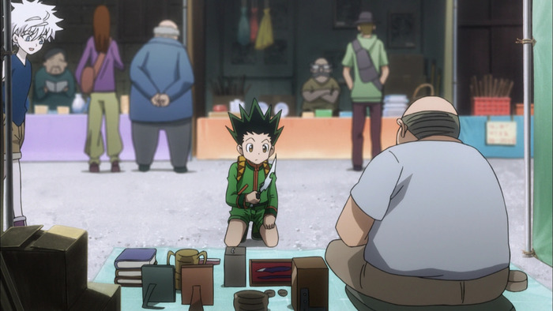
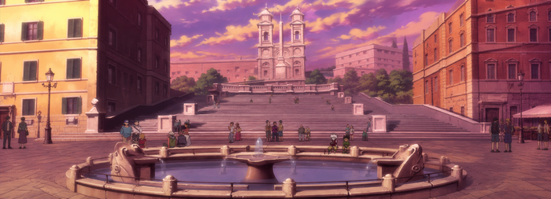
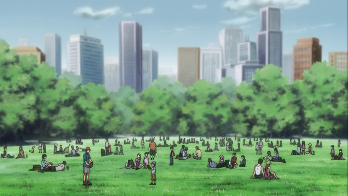

Pontos turísticos

Centro Comercial
Uma das regiões mais movimentadas de York City. O local reúne diversas lojas, restaurantes e estabelecimentos, sendo bastante frequentado por moradores e visitantes.
Centro de Leilões
Conhecido por receber os famosos leilões de York City. Durante o período dos eventos, comerciantes e colecionadores de várias partes do mundo visitam a cidade.

Distrito Central
O coração de York City. Com suas ruas movimentadas, prédios e estabelecimentos comerciais, é uma das áreas mais conhecidas por quem visita a cidade pela primeira vez.

Parque de York
Uma área mais tranquila, ideal para quem deseja fugir um pouco do movimento do centro. O parque oferece um espaço para caminhadas e descanso em meio à cidade.